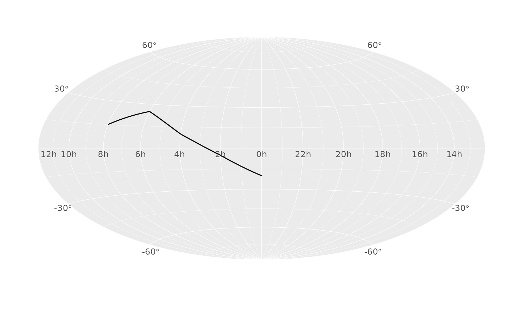

Coordinate system for sky maps in equatorial coordinates using a Hammer-Aitoff projection.
Usage
coord_equatorial(
clip = "on",
label_offset_lon = 0.025,
label_offset_lat = 0.035,
munch_deg = 1,
pad_top_pt = NULL,
pad_bottom_pt = NULL,
pad_left_pt = NULL,
pad_right_pt = NULL,
clip_on_boundaries = TRUE
)Arguments
- clip
Character scalar. Passed to `ggplot2` coordinate clipping (`"on"` or `"off"`).
- label_offset_lon
Numeric scalar in npc units. Vertical offset for right-ascension labels relative to the equator.
- label_offset_lat
Numeric scalar in npc units. Outward offset for declination labels relative to the projection outline.
- munch_deg
Numeric scalar. Maximum angular step (in degrees) used to segment paths and polygon edges along great circles before projection.
- pad_top_pt, pad_bottom_pt, pad_left_pt, pad_right_pt
Optional numeric scalars (points) used to reserve external space for axis text. `NULL` enables automatic sizing.
- clip_on_boundaries
Logical scalar. If `TRUE`, draws an outside mask so geoms are visually clipped to the projection boundary.
Value
A `ggplot2` coordinate object (a `ggproto` instance inheriting from `CoordEquatorial`) to be added to a plot.
Examples
library(ggplot2)
df <- data.frame(
ra = c(0, 30, 60, 90, 120),
dec = c(-20, -5, 10, 25, 15)
)
ggplot(df, aes(ra, dec)) +
geom_path() +
coord_equatorial() +
scale_eq_ra(breaks = seq(0, 330, by = 30)) +
scale_eq_dec(breaks = seq(-60, 60, by = 30))
